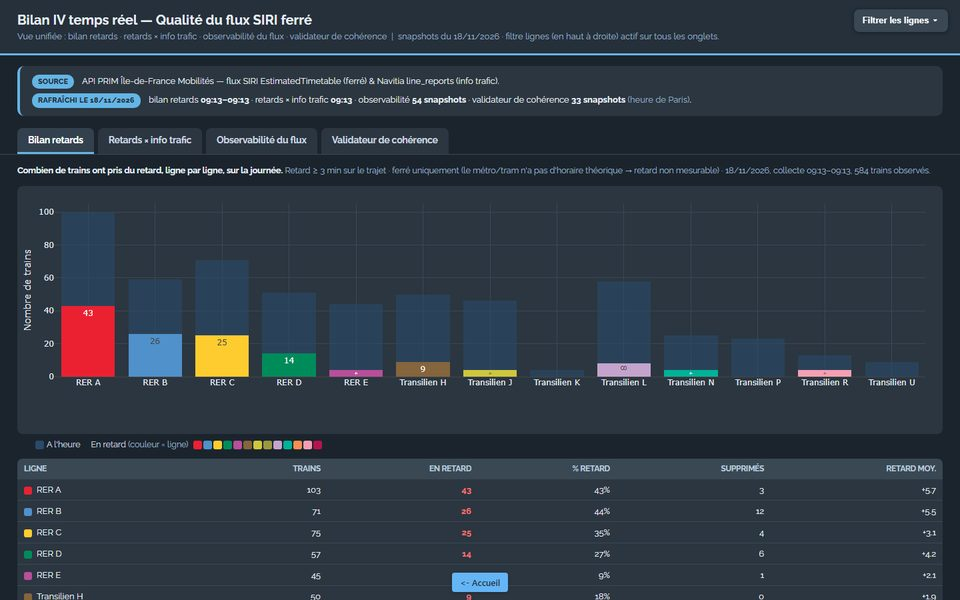
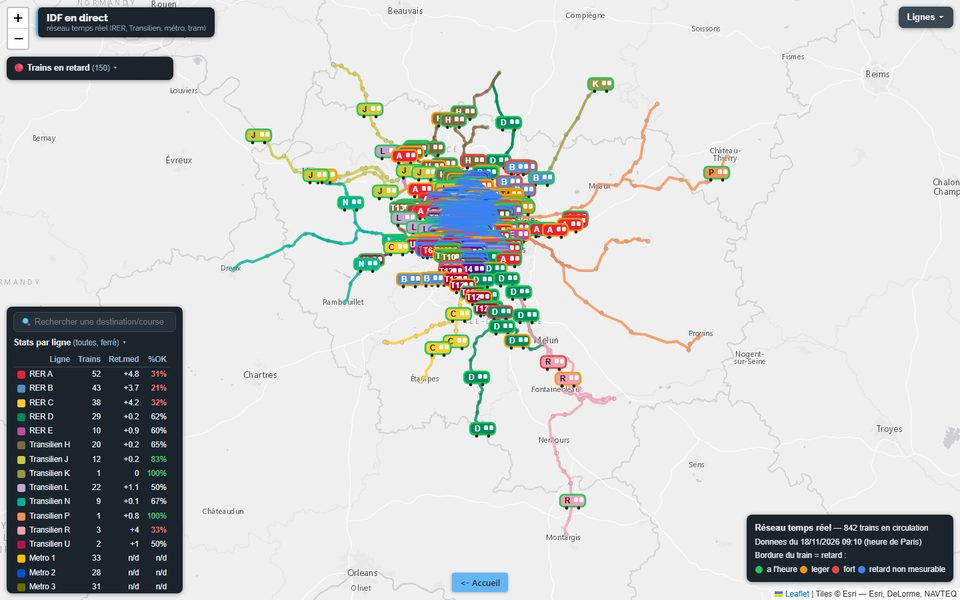
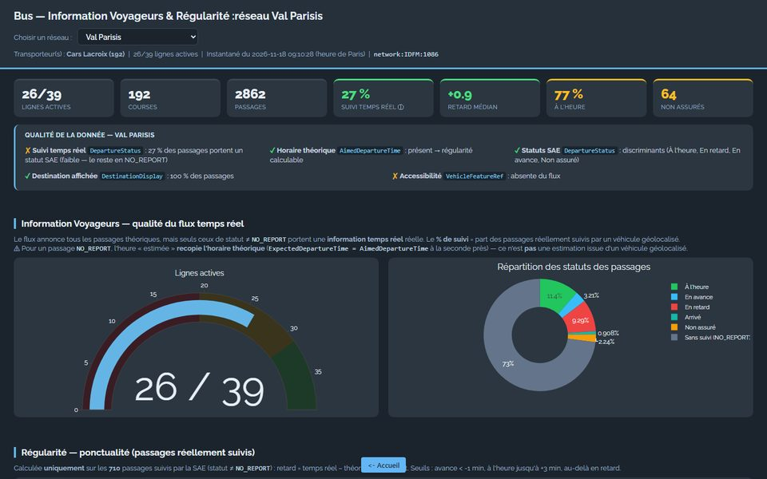
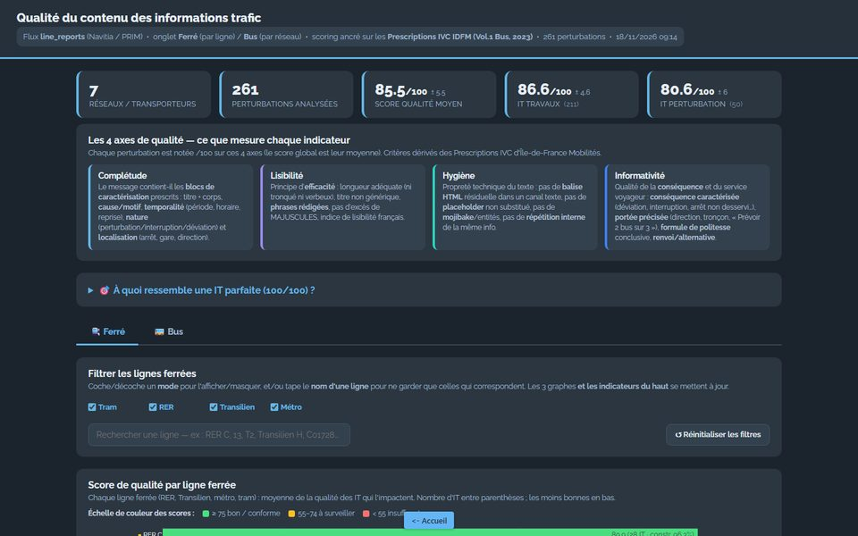
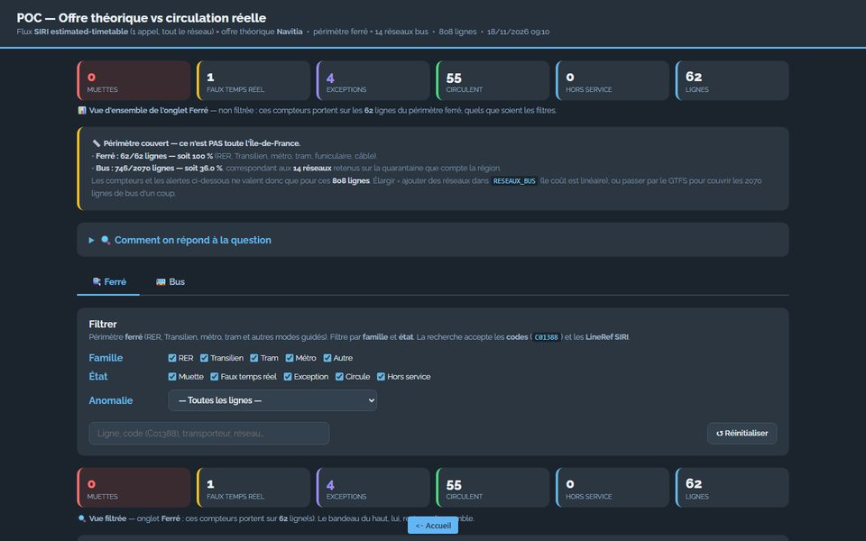
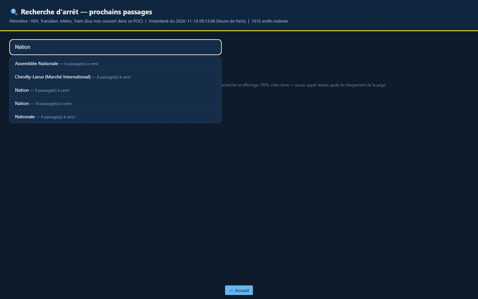
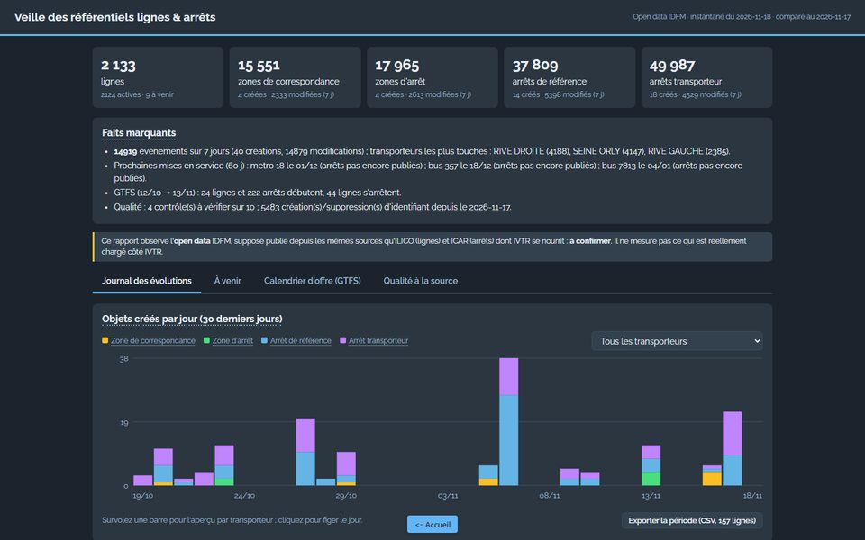

Les tableaux de bord
Chaque page est un instantané : la pastille indique la date de ses données.

FerréCockpit ferréLa vue d'ensemble du ferré : retards du jour, info trafic, santé et contrôle du flux SIRI ET, ligne par ligne, pour le RER, le Transilien, le métro et le tram.Données du 18/11 à 09:22Ouvrir ->
FerréCarte des trainsPosition estimée de chaque train, colorée selon son retard, sur le tracé officiel des lignes.Données du 18/11 à 09:13Ouvrir ->
BusBus : suivi et régularitéPar réseau, part des passages réellement suivis par un véhicule et régularité des lignes.Données du 18/11 à 09:14Ouvrir ->
Info traficQualité de l'info traficNote des messages de perturbation par transporteur : complétude, lisibilité, hygiène, informativité.Données du 18/11 à 09:14Ouvrir ->
Offre théoriqueLignes muettesLes lignes qui devraient circuler d'après l'offre théorique mais ne publient aucune course en temps réel.Données du 18/11 à 09:13Ouvrir ->
Offre théoriqueRecherche d'arrêtProchains passages d'un arrêt, ligne par ligne, et lignes muettes à cet arrêt.Données du 18/11 à 09:14Ouvrir ->
RéférentielsVeille des référentielsCréations, modifications et suppressions de lignes et d'arrêts publiées en open data, jour par jour.Données du 18/11 à 09:15Ouvrir ->